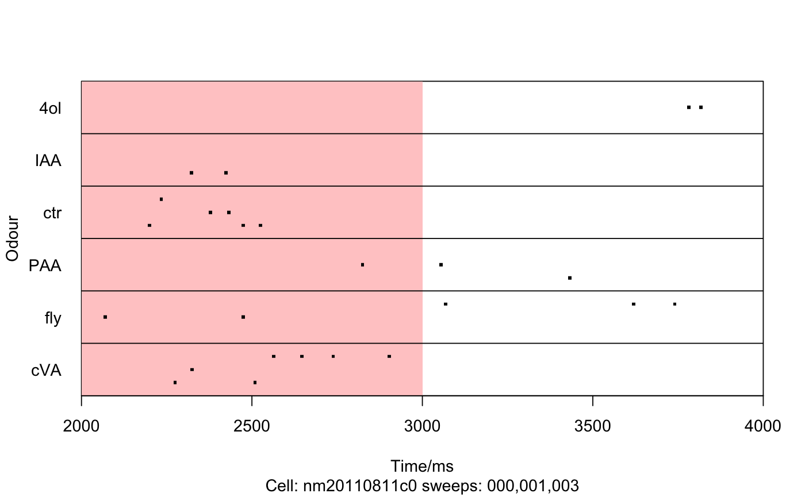

The list of spiketimes has two columns, Time and Wave, where wave is the
number of the wave within each sweepfile containing the spike. xlim and
stimRange are kept as attributes that will be used for plots * fixChannels
expects a named vector of any channels that need to have different odour
names. This can be used to fix an error in the original ODD config file. * If
spike time txt files have been placed in a subdirectory, then that
subdirectory must be specified using the subdir argument. * However it
is expected that the corresponding pxp and odd config files remain in the top
level directory for the cell.
CollectSpikesFromSweeps(sweepdir, sweeps, subdir = "", xlim, stimRange, fixChannels = NULL, subset = NULL)
| sweepdir | directory containing Nclamp pxp sweep files |
|---|---|
| sweeps | Vector of sweeps to include (e.g. 1:7) or character regex which sweeps must match. |
| subdir | subdirectory containing group of spike times txt files |
| xlim | time range of sweeps |
| stimRange | time range of stimulus |
| fixChannels | Optional named integer vector that remaps some bad numeric channels to correct odours. FIXME shouldn't we fix channels as well. |
| subset | Numeric vector of channels or character vector of odours |
list (with class spiketimes) containing times for each sweep
# NOT RUN { # Collect from absolute path (what you will probably typically do) spikes=CollectSpikesFromSweeps( '/Volumes/JData/JPeople/Jonny/physiology/data/nm20120514c2',subdir='BLOCK B') # }# If you have your data in a single folder hierarchy, you can that as the # data directory. # Here we set the data directory to folder containing gphys example data options(gphys.datadir=system.file('igor','spikes',package='gphys')) spikes=CollectSpikesFromSweeps('nm20120514c2',subdir='BLOCKB') # Finally an example specifying the exact sweeps to load spikes=CollectSpikesFromSweeps("nm20110811c0",c(0,1,3)) # and plotting them plot(spikes,xlim=c(2000,4000),odourRange=c(2000,3000))